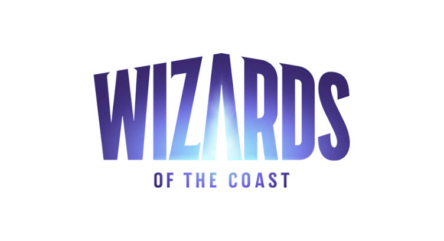
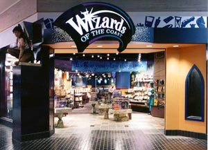

Storia e prodotti dell'editore
Wizards of the Coast (abbreviata in WotC) è una società statunitense specializzata nello sviluppo, nella pubblicazione e nella distribuzione di giochi da tavolo, giochi di carte collezionabili e videogiochi. Fondata nel 1990 da Peter Adkison, è conosciuta principalmente per essere l'attuale editore di Dungeons and Dragons e per aver ideato e pubblicato Magic: The Gathering, uno dei giochi di carte collezionabili più importanti e diffusi al mondo. La società ha sede a Renton, nello Stato di Washington, ed è attualmente una controllata del gruppo Hasbro, multinazionale operante nel settore dei giocattoli e dell'intrattenimento.
Nel corso della propria attività, Wizards of the Coast ha contribuito in maniera significativa allo sviluppo dell'industria dei giochi da tavolo e di ruolo, introducendo nuovi modelli commerciali e promuovendo la diffusione di comunità internazionali di appassionati. Il suo catalogo comprende produzioni originali, ambientazioni fantasy, giochi strategici e numerosi prodotti appartenenti a marchi acquisiti nel corso degli anni.

La società venne fondata nel maggio 1990 da Peter Adkison, insieme a un gruppo di collaboratori e appassionati di giochi, nell'area di Seattle, negli Stati Uniti. L'idea di creare una casa editrice specializzata in giochi di ruolo era nata alcuni anni prima, durante le esperienze ludiche di Adkison e dei suoi amici. Anche il nome dell'azienda deriva da questo contesto: Wizards of the Coast, traducibile in italiano come "Maghi della Costa", era infatti il nome di una gilda di maghi presente in una campagna di gioco di ruolo alla quale Adkison aveva partecipato.
Tra i primi prodotti pubblicati figurava The Primal Order, un supplemento per giochi di ruolo distribuito nel 1992 e dedicato principalmente alle divinità, ai culti religiosi e ai rapporti tra le entità divine e i rispettivi seguaci. Il manuale era progettato per essere utilizzato con differenti sistemi di gioco, caratteristica che rappresentava un approccio innovativo per il settore dell'epoca.
La svolta commerciale arrivò nel 1993 con la pubblicazione di Magic: The Gathering, ideato dal matematico e game designer Richard Garfield. Il progetto nacque da una richiesta di Adkison, che desiderava un gioco economico da produrre, facilmente trasportabile e caratterizzato da partite relativamente brevi. Garfield sviluppò così un sistema basato su carte collezionabili, ognuna dotata di caratteristiche e funzioni specifiche, che permetteva ai giocatori di costruire mazzi personalizzati e affrontarsi attraverso strategie differenti. Il successo fu particolarmente rapido e contribuì a trasformare Wizards of the Coast da una piccola casa editrice specializzata in giochi di ruolo a una delle principali realtà internazionali del settore ludico.
Uno degli eventi più importanti nella storia della società avvenne nel 1997, quando Wizards of the Coast acquisì TSR, la casa editrice originaria di Dungeons and Dragons. L'operazione consentì alla società di entrare in possesso dei diritti editoriali del celebre gioco di ruolo e delle relative ambientazioni, ampliando considerevolmente il proprio catalogo.
L'acquisizione rappresentò un passaggio fondamentale per il futuro di Dungeons and Dragons, che negli anni successivi venne sottoposto a un importante processo di rinnovamento editoriale. Nel 2000 Wizards of the Coast pubblicò la terza edizione di Dungeons and Dragons, introducendo un sistema di regole profondamente rivisto, maggiori possibilità di personalizzazione dei personaggi e una struttura più uniforme per le meccaniche di gioco. La nuova edizione contribuì a rilanciare il marchio e a consolidarne la presenza nel panorama internazionale dei giochi di ruolo.
Nel settembre 1999, la stessa Wizards of the Coast venne acquisita da Hasbro, per un valore complessivo iniziale di circa 325 milioni di dollari. Da quel momento la società entrò a far parte di uno dei più grandi gruppi mondiali dell'intrattenimento, mantenendo la propria identità editoriale e continuando a sviluppare i principali marchi del proprio catalogo.
Tra le proprietà intellettuali più importanti gestite da Wizards of the Coast figurano alcuni dei giochi più conosciuti nel panorama internazionale. Il primo è Magic: The Gathering, considerato uno dei principali responsabili della diffusione dei giochi di carte collezionabili. Il titolo si distingue per la profondità strategica, la varietà delle carte disponibili e la possibilità di costruire mazzi differenti in base alle preferenze e allo stile di gioco dei partecipanti.
Un altro marchio fondamentale è Dungeons and Dragons, acquisito attraverso la TSR nel 1997 e successivamente sviluppato attraverso nuove edizioni dei regolamenti, manuali supplementari, ambientazioni e prodotti digitali. Il gioco rappresenta una delle principali produzioni editoriali della società e ha contribuito alla diffusione internazionale dei giochi di ruolo da tavolo.
Wizards of the Coast ha inoltre gestito, tra il 1999 e il 2003, la pubblicazione del Gioco di Carte Collezionabili Pokémon al di fuori del Giappone, contribuendo alla sua diffusione nei mercati occidentali. Il marchio venne successivamente trasferito a Pokémon USA, la società incaricata della gestione commerciale del franchise nei territori interessati.
Nel corso degli anni Wizards of the Coast ha progressivamente ampliato la propria attività, affiancando alla produzione di giochi fisici lo sviluppo di piattaforme digitali e videogiochi. Tra i progetti più significativi figura Magic: The Gathering Online, pubblicato nel 2002, che ha consentito di trasferire l'esperienza del celebre gioco di carte su una piattaforma informatica, permettendo agli utenti di collezionare carte virtuali e partecipare a partite attraverso Internet.
La società ha inoltre contribuito alla realizzazione e alla distribuzione di numerosi prodotti derivati dalle proprie proprietà intellettuali, tra cui romanzi, fumetti, videogiochi e contenuti multimediali. In particolare, l'universo di Dungeons and Dragons ha ispirato numerose produzioni videoludiche, tra cui Baldur's Gate, Neverwinter Nights e Icewind Dale.
Nel panorama contemporaneo, Wizards of the Coast rappresenta una delle realtà più influenti nel settore dei giochi di ruolo e dei giochi di carte collezionabili. Attraverso i propri marchi, le comunità di giocatori e le attività di sviluppo digitale, la società continua a esercitare un ruolo significativo nell'evoluzione dell'intrattenimento interattivo e della cultura ludica internazionale.
